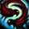
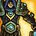

贼 + 戒律牧 · 2v2 组合训练器
这个组合唯一要记住的一句
贼牧不是"贼杀人、牧师奶"。
是两个人轮流当主角——输的那局，通常是两个人同时想当主角，或者同时以为对方是主角。
是两个人轮流当主角——输的那局，通常是两个人同时想当主角，或者同时以为对方是主角。
这个组合唯一的输法：牧师先死
所以贼的第一职责不是杀人▸
2v2 只有两个人，贼是唯一的伤害来源，牧师是唯一的治疗来源，没有替补。
贼杀不掉人不会输——还有下一轮、还有消耗阶段。但牧师一死就是零。
所以：贼的第一职责是保证牧师不被抓死，第二职责才是杀人。这跟单人训练时"窗口不能空转"的直觉是冲突的——在 2v2 里，为了救牧师而放弃一个成型的窗口，经常是对的。
反过来对牧师也成立：你活着比你治疗量高重要。宁可少治一口，也不要把自己走到会被抓的位置。
分工：发起者 vs 维持者
但戒律牧是个会打伤害的维持者▸
🗡 贼 · 发起者
决定什么时候开、开谁、控谁。
他掌握着这个组合的节奏权——什么时候进攻、什么时候脱战重来，是贼说了算。
但节奏权的代价是：他也要为牧师的安全负责。
他掌握着这个组合的节奏权——什么时候进攻、什么时候脱战重来，是贼说了算。
但节奏权的代价是：他也要为牧师的安全负责。
✚ 牧师 · 维持者（会打伤害的那种）
戒律牧必须打伤害才能治疗（救赎 把伤害的 60% 转成治疗）。
所以他不是站着奶——他是这个组合的第二个伤害来源，而且他的伤害同时在回血。
在 2v2 里这一点被放大：牧师的输出经常是压垮对面治疗的最后一根稻草。
所以他不是站着奶——他是这个组合的第二个伤害来源，而且他的伤害同时在回血。
在 2v2 里这一点被放大：牧师的输出经常是压垮对面治疗的最后一根稻草。
耦合点
贼进场的那一刻，牧师应该已经在输出了——不是等贼打出伤害才开始跟。牧师的伤害既在治疗，也在给对面施压，两个人的伤害叠在同一个目标上，对面治疗才会崩。
2v2 不是"3v3 少一个人"
实测天赋分布都不一样▸
top50 的实测数据能直接看出两种赛制是不同的游戏：
戒律牧英雄天赋
3v3：Oracle 45 / Voidweaver 5
2v2：Oracle 32 / Voidweaver 18
2v2 里 Voidweaver 明显更多——因为 2v2 更吃牧师自己的输出。
敏锐贼 PvP 天赋
3v3：
2v2：
2v2 里缴械更值钱——只有两个人，掐掉一个人的输出就是掐掉一半。
更重要的结构差异：2v2 的消耗（dampening）来得更快更狠。3v3 里两个 DPS 压一个治疗，2v2 是一个 DPS 压一个治疗——打不穿的概率高得多，所以"什么时候认打不穿、转消耗"是 2v2 独有的判断。
能不能开这一波？两个人的条件一起看
一半是贼的条件，一半是牧师的。看不到队友状态就等于在瞎开。
开场判断器
现在的局面满足哪几条？
三个共享时钟
这三个钟两个人共用，任何一个见底，两个人一起输。

贼的爆发冷却，加上两个人共用的控制递减预算。
控制递减是两个人共用的▸
贼的 偷袭 /肾击 是眩晕类，牧师的 心灵尖啸 是恐惧类——它们类别不同，可以接成长链。
但如果两个人的控制打在同一类别上，第二个只剩一半。这就是"没沟通的双控等于没控"。
但如果两个人的控制打在同一类别上，第二个只剩一半。这就是"没沟通的双控等于没控"。
谁控治疗、谁控目标，开场前就该定▸
2v2 里通常是：贼用 闷棍 /致盲 处理对面治疗（失能类），牧师的 心灵尖啸 留给突发状况。分工乱了就会互相打断。
牧师的法力是这个组合真正的血条。他见底了，两个人一起输。
贼也在花牧师的蓝▸
贼每挨一次不必要的伤害，都在消耗牧师的法力。2v2 里"贼站桩硬吃伤害"的代价，是牧师提前破产。贼的 佯攻 /闪避 /走位不只是自保，是在替队友省蓝。
保命牌要两个人一起记账▸
对面还剩几张爆发牌、我们还剩几张保命牌。这个差额决定你们能撑到第几轮。

消耗时钟（Dampening）2v2 独有，压在两个人头上▸2v2 的消耗来得比 3v3 更快更狠——因为这里是一个 DPS 压一个治疗，打不穿的概率高得多。
"什么时候认打不穿"是 2v2 独有的判断▸
如果连续两三轮都在同一血线被拉回去，说明纯靠伤害赢不了。这时候策略要转：省蓝、逼对面的治疗多花、把胜负交给消耗。
转消耗之后两个人的工作都变了▸
贼：从"追求击杀"转成"逼技能 + 保持压力 + 绝不白挨伤害"。
牧师：从"跟着输出"转成"最大化法力效率"——但戒律牧的输出恰好是最省蓝的治疗方式，所以他反而不该完全停手。
牧师：从"跟着输出"转成"最大化法力效率"——但戒律牧的输出恰好是最省蓝的治疗方式，所以他反而不该完全停手。
本版定盘（2v2 实测）
缴械在 2v2 比 3v3 更常带（33 vs 29）——只有两个人，掐掉一个人的输出就是掐掉一半。
Ultimate Radiance 48/50 · Inner Light 46/50 · Phase Shift 39/50
英雄天赋：Oracle 32 / Voidweaver 18
对比 3v3：Inner Light 只有 33/50、Phase Shift 有 48/50、Oracle 45/5。2v2 明显更吃牧师自己的输出。
英雄天赋：Oracle 32 / Voidweaver 18
对比 3v3：Inner Light 只有 33/50、Phase Shift 有 48/50、Oracle 45/5。2v2 明显更吃牧师自己的输出。
耦合点
两边的数据指向同一件事：2v2 里"两个人都要能输出"。贼带缴械压制对方输出，牧师带偏输出的天赋补足伤害——因为一个 DPS 打不穿一个治疗。
🗡 敏锐
爆发型。攒一个窗口一次结账，窗口外几乎没有压力。
配牧师的好处：控制链极强（闷棍 致盲 偷袭 肾击 ），能给牧师创造干净的输出环境。
代价：窗口外对面治疗能回满，所以非常依赖牧师的伤害补足。
配牧师的好处：控制链极强（
代价：窗口外对面治疗能回满，所以非常依赖牧师的伤害补足。
🗡 狂徒
持续型。有稳定压力、机动性强、防御厚。
配牧师的好处：持续压力更适合消耗战，而 2v2 经常打成消耗战。
代价：控制不如敏锐干净，而且剑刃乱舞 的溅射会打破牧师的控制——沟通成本更高。
配牧师的好处：持续压力更适合消耗战，而 2v2 经常打成消耗战。
代价：控制不如敏锐干净，而且
怎么选
对面有治疗、预计打消耗 → 狂徒的持续压力更稳。对面没治疗、要抢先手 → 敏锐的爆发更容易一波带走。
本页其余内容以敏锐为主线，狂徒的差异点会单独标出。
本页其余内容以敏锐为主线，狂徒的差异点会单独标出。